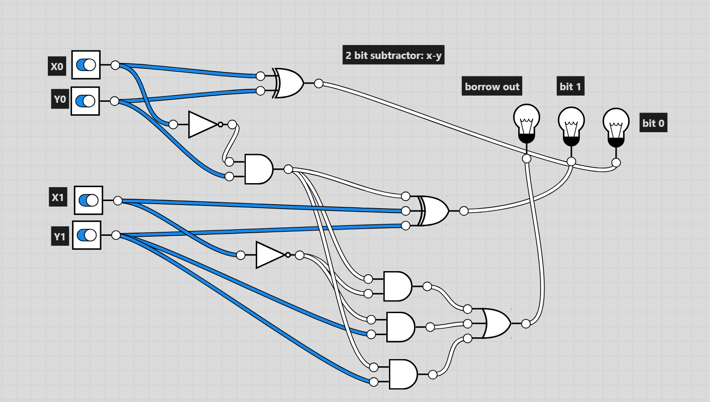

CS302 Deliverable: Digital Logic x Metaphysics
Construction: 2 bit addition circuit

This circuit is capable of adding two bit numbers together. X0 and Y0 represent the 0th bit of the two numbers, and X1 and Y1 represent the 1st bit of the two numbers. The sum bit from the 0th bits are the only ones that can light up the 0th bit output light bulb, so they go straight to it. The carry out from the 0th bits is xored with the sum of the 1st bits to determine whether the 1st bit output bulb should be lit. The third bulb (2nd output bit) can either be lit by the carry out from the 1st bits, or the sum of the first bits and the carry from the 0th bits.
Deconstruction:
Our in class discussions focused a lot about the philosophy of computers, and what is and isn't a computer. Some classmates had very abstract definitions of what a computer would be (Klaus, Joe), remarking that the very idea of representation of a computer was a computer itself while others (Myself, Paul, Dynamique) agreed that a computer had to be a physical computing machine with an input, computations, and an output. Discussion questions that my group came up with such as "is a broken or discharged computer still a computer?" challenged my thinking and preconcieved notions of what is and isn't a computer. Ultimately, I came to the personal definition of a computer as any object that has or has had the potential to perform computations somewhat independently of human/other interaction.
Construction: 2 bit subtraction circuit
This circuit is capable of subtracting two bit numbers. However, it can't handle negatives. Constructing it was more challenging than the 2-bit adder circuit, but a similar process overall. Constructing it entailed planning out which possible combinations of inputs would make a given output bulb light up, and then tracing those routes to ands, ors, xors, and, of course, nots (because we are doing subtraction).
Deconstruction:
One of my final questions after multiple weeks of discussion is the following: Is there any perfect single definition to what is and isn't a computer? My thoughts on this are still mixed. Given that computers were invented by humans, doesn't it only make sense that humans are able to define their creation? But this brings up other questions. Could computers, even if not the ones we know today, exist without humans?
Citations/Readings:
Alicedew. (2025, November 20). Logic Gates Explained: Types, Truth Tables, and Applications for Beginners. E. E. Eng. ; Blogger. https://www.electrical-info.net/2025/11/logic-gates.html
Davis, M. (2018). The universal computer: the road from Leibniz to Turing (Third edition.). CRC Press. https://doi.org/10.1201/9781315144726
Lu, J., & Lopes, P. (2022). Integrating Living Organisms in Devices to Implement Care-based Interactions. https://doi.org/10.1145/3526113.3545629
Gunji, Y.-P., Nishiyama, Y., & Adamatzky, A. (2011). Robust Soldier Crab Ball Gate. Complex Systems, 20(2), 93–104. https://doi.org/10.25088/complexsystems.20.2.93
Dewdney, A. K. (1988). Computer Recreations. Scientific American, 258(5), 118–121. https://doi.org/10.1038/scientificamerican0588-118